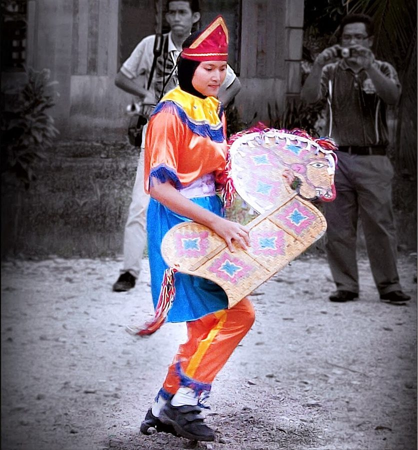
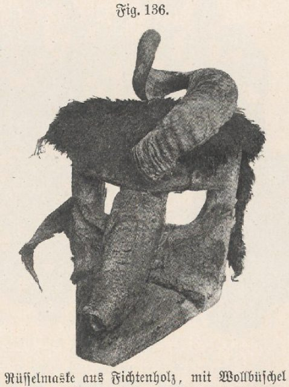
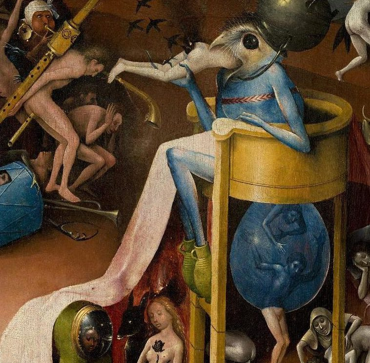

the transaction between you and the class
… the nature of the transaction between you and the class …
译本：「如果你理解你和学生之间互动关系的本质」
你和学生之间这笔「交易」是怎么回事
transaction 就是第 02 篇「地位往来」（status transaction）的那个词。学生肯出神，是在和老师做交易：靠老师的权威进去，交出控制，换来不必负责。懂了这笔交易，才知道风险在哪。
「面具课危险吗？」这是这一篇的最后一节，也是作者唯一正面回答这个问题的地方。他先把人们的担心拆成三样：学生会打人、会发疯、叫摘面具不肯摘，然后拿三段人类学记录（骑木马的马来人、巴厘岛的猪神、温哥华岛的「食人者」）、一则吓人的传闻和他自己课上的几件事一样一样回应。读的时候抓两条线：他怎么论证「不危险」，以及他在哪里自己让了步。

上一页（§12–§13）讲全脸面具，末尾是几场分量很重的照片面具戏。这一节退一步，回答整篇一直悬着的问题：作者要学生在面具课上「被附身」，到底安不安全。它也是这一篇的收尾，前面讲过的出神、演高的老师、「叫你摘下面具就得摘」这条规矩，都在这里派上用场。读完还有一节附录（流浪儿笔记和三个梦），放在 05d 那一页。
作者开头就说他认为这些担心「毫无根据」，后面又说反对情绪宣泄的人不顾证据。前一句他自己后来让了好几步；后一句，今天的心理学并不站在他那边。读的时候把他的课堂经验和他的断言分开看。
面具课出了事，该怪面具，还是怪带课的人？
读的时候带着这几个问题。不用先找答案，读完回来对照「检查一下理解」。
这一节像一份辩护词。开头先下判决（担心没有根据），再列出三条「指控」，一条一条答。第一条（打人）篇幅最大：先摆三段别人写的仪式记录，引文很长，读来像人类学课；然后他下判断，再讲一则传闻，用一段一问一答把它拆开，接着讲他自己课上真出过的几件小事。第二条（发疯）转得很快，从一个心理学实验跳到英国人不哭的习惯。第三条（不肯摘面具）落到具体手法：怎么走过去、怎么扶。然后突然插进一段禅师和学生的问答，像是离题，其实在讲老师该有的样子。最后两段又一转，从「别当治疗」讲到人心底下压着什么。注 12 是一位学生的自述，挂在倒数第二段后面，别漏读。
作者落在哪：面具本身不危险，危险在带课的人。老师懂得自己和学生之间这笔「交易」、温和地进，面具课在他看来比体操安全得多；再加上不分心、由浅入深。出了事，多半是老师慌了，或者没人在该喊停的时候喊停。
这一页是原书和译本「面具与催眠」一篇的第 14 节。粗体是本站给的节名，下面是译本的节号和小标题、这一节在译本电子书中开头的几个字（搜它就能跳过去），再下面是英文原文的开头。每节标了档：「先读」是这本书最精彩、不读就错过的，「有空」好看但跳过不丢线。读完打个勾。
先把这一页用到、作者默认你懂的几个概念讲一遍。讲的是概念本身，作者拿它推出什么，读原书时自己看。
很多暴力不是「失控」，而是在规矩之内。拳击台上打人、橄榄球场上撞人、狂欢节上往路人身上撒面粉，换个场合都得报警，在这里却是游戏的一部分：大家知道界线在哪，过了线就有人出来拦。人类学家记下的不少仪式也是这样。
这是作者在这一节的用法：出神和面具里的暴力，样子和分寸都是周围的人许可、期待出来的；他还说某种程度上所有暴力都如此。再推一步：老师事先怎么布置，就会得到什么样的行为。
在这一页：§14 前半：作者转述完三段仪式记录后用它下判断，再拿它解释阿尔伯塔的传闻和他自己课上的事。
精神分析的术语。1890 年代 Breuer 和弗洛伊德治疗癔症时认为，压在心里的创伤情绪要重新经历一遍、发泄出来，症状才会消，他们管这叫「宣泄法」。日常说法就是「哭出来就好了」「火发出来就没事了」。它常和亚里士多德讲悲剧时的「净化」（catharsis）混着说。
和它相对的，是英国人引以为傲的「绷紧上唇」：再难受也不露声色。另一个容易混的词是退行：退行是回到孩子般的状态，宣泄是把情绪放出来，作者在这一节两个词都用。今天的心理学对「发泄」的看法变了很多，见页末「今天怎么看」。
在这一页：§14 后半两处：作者说反对宣泄的人不顾证据，又说面具课因为有强烈的宣泄，可以有疗效。
带过新手的人大概都有体会：人判断「有没有事」，先看身边那个懂行的人慌不慌。你越大惊小怪，对方越害怕。心理治疗也讲治疗师要稳，来访者说出多吓人的事都接得住。
blandness 本义是「平淡、没滋味」。这是作者的用法：面具老师对学生做出的任何事都不吃惊，像冥想老师那样让人觉得「没什么可怕的事在发生」。它和 §8 讲的「老师演高」（见地位）相通。
在这一页：§14 后段：作者先说学生看老师的神色判断危险，然后提出它，再拿禅师和学生的问答作例子。
学游泳先在浅水区扶着池边，学开车先去空停车场。心理学治疗恐惧症的「系统脱敏」也是这个思路：从最不怕的一级开始，一级一级往上加。读过第 01 篇的人会认出来，作者讲怕被人看时用的就是渐进脱敏。
作者在这里用这个词说面具：练习要由浅入深。第一次戴面具就让人进一场吓人的戏，多半不会让她放开，反倒让她更缩回去。
在这一页：只在注 12 出现一次：一个没受过训练的人带课，学生第一次戴面具就被吓坏；作者在注末说所有面具练习都该分级。
作者在课上用过、照着就能玩的；个别几张是本站照书里的段落改的，卡里写明了来历。几个人、怎么玩、看什么写在卡片上；「先猜」那一栏是书里的课堂上发生了什么，先自己猜，或者先玩一次，再点开。全书的游戏卡汇总在游戏汇总。
这一节没有现成的课堂游戏，下面两张是从作者的做法里提出来的。戴面具的入门课见 05c 的面具教学，不要自己在家照着做。
没人受伤，男孩也没被弄出窗外，另一位老师及时进来了。那位老师叫学生照面具的感觉去做，还要「恨一个人」，学生挑的偏偏是全班最受欢迎的男孩。作者的结论：是一位没经验的老师慌了；孩子们只是得了许可在胡闹，挑人的方式反倒说明他们心地不坏。
她突然产生了幻觉，觉得那里真有一只动物。作者说这种情况比面具课还难处理；他告诉她这种事有时会发生，只说明她非常投入。他拿这件事说明，任何好的表演训练都会动到人，面具课至少还能把责任推给面具。
作者自己说这比面具课更难收场。只做两三分钟，旁边要有人；觉得不对劲就睁眼、站起来走走、说说话。正受严重焦虑、创伤或精神疾病困扰的人不要做。
按在书里出现的顺序排，标题前是节号。只讲到读懂这一页需要的程度。
作者从这本书里摘了一场马来人的仪式：男人们骑着木马跳舞，被马的灵附身，其中一个扑向一群女人，咬伤了一个女孩，最后巫师（pawang）按住他的太阳穴猛一扭头，他才醒过来，舞照跳。头人说这是女孩的错：她头上戴了花。东南亚至今有类似的骑竹马舞，马来西亚叫 Kuda Kepang，爪哇叫 Kuda Lumping，有一种演法里舞者会进入出神。
作者从 Belo 的书里摘了两次「猪神」失控：一个穿着甘蔗纤维猪衣、化身猪神的男人，一次是被人骂了一句，一次是被小孩吐了口水，就发了狂。众人扑上去按住、浇水、按摩，他才睡过去，再「醒来」。第二次没给他泥浴，人群嫌结束得太早，都不高兴。作者要你注意的是：猪从头到尾都是猪。
「食人者」（Hamatsa）是夸夸嘉夸人（Kwakwaka’wakw，旧称 Kwakiutl，住在温哥华岛北部一带）冬季仪式里最重要的秘密会社，新成员入会要跳好几天的舞。Benedict 写得很吓人：舞者会咬下观众的肉。作者用的是她同一段的后半：咬下的每一口都有人数着，事后吐出来。Drucker 又说被咬的人是事先说好的，事后有礼物。

阿尔卑斯山区每年冬天（大约圣诞到主显节那十二天前后）有人戴上狰狞的木雕面具、披着毛皮游街，叫 Perchten，名字来自民间传说里的女神 Perchta。作者说有一种奥地利「恶魔」面具（他写作 Wild Pehrt）从前有时会被围观的人撕碎，萨尔茨堡附近据说还有埋它们的石十字架。他拿这个，和英格丽德戴着面具在聚会上挨打的事，半开玩笑地说：真要论证，倒更容易说有危险的是戴面具的人。
作者说，他听说过的戏剧课上唯一一次重伤，是她在一次「方法派」即兴里摔断了胳膊。方法派（the Method）是 Lee Strasberg 等人在纽约的演员工作室推广的一路表演训练，要演员调动自己的真实记忆和情绪进入角色。作者特意点出来：出事的不是面具课。
2-4-6 问题 1960 年发表：告诉你「2、4、6」符合某条规则，你可以自己报三个数来试，最后说出规则。很多人只试符合自己猜想的数，很少去试能推翻它的。作者引的是 Wason 一篇讲「排除不了假设」的论文里的一件事：一名被试没提出任何猜想，却出现了精神病症状，被救护车送走。作者要的是对比：没人会说实验该停，他却肯定面具课出了这种事就会被叫停。
美国禅师 Philip Kapleau（1912–2004）的《禅门三柱》（The Three Pillars of Zen，1965）记下了安谷白云和学生的问答。作者摘的两段里，学生打坐时哭着说害怕，禅师答：这类体验没有什么特别的意义，别执着，继续往前。作者拿他当「不动声色」的样板。

博斯（Hieronymus Bosch，约 1450–1516）是尼德兰画家，画里满是怪物、刑罚和半人半兽的东西。作者还说博斯本人演过用面具的戏，本站没查到可靠的出处。「世纪末的维也纳」指 1900 年前后弗洛伊德行医、著书的那个维也纳：弗洛伊德认为人深深压抑的是性冲动。作者在最后一段把它翻了过来。
读译本时值得翻一下原文的地方：双关、行话、口语，和译本传不出的语气。灰色斜体是原文里的一小段，在英文电子书里搜它就能找到；方框里是译本这一句的译法。译错的放在下一节「译本勘误」。
对着译本读这一节时，下面这些地方会把人读歪。方框里是译本的原句，在译本电子书里搜它就能找到；灰色斜体是英文原文那一处。只收意思错了、反了、漏了的，措辞上的出入不收。全书的勘误汇总在译本勘误。
这一节有两句正好是作者论证的两根柱子，偏偏都译错了：「老师预备什么，就得到什么」和「真有问题的人会自己退出」。读到那两处，先看下面对应的两条。
… Many people express alarm about the …
译本：「许多人对“面具作品的危险”表示担忧」
Mask work 是戴面具的练习、面具课，不是面具这种工艺品。这一篇里它还被叫成「面具创作」「面具工作」，指的都是同一件事。
… thinking that underlies the fear can …
译本：「这种恐惧背后的“神奇”想法」
magical thinking 是心理学说法「巫术式思维」：以为某样东西在场就能消灾，不管它和危险有没有关系。作者在挖苦：有个医生在场大家就放心了，可那位医生对面具一窍不通。「神奇」看不出这层讽刺。
… precipitating a fit of powerful convulsions …
译本：「引起一阵强烈的骚动」
原文：一群人抓住他，引得他剧烈抽搐起来，并不是人群起了骚动。随后众人浇水、按摩，他才安静下来，这是仪式收场的一环。
… The violence is completely in character …
译本：「暴力完全符合性格」
in character 是戏剧说法「不出角色」：猪发狂是猪的样子，马发狂是马的样子。这是作者整段的论点，读成「符合性格」，就像在说那个人本性暴躁。下一句的「不符合性格」也照此理解。
… who don’t get possessed properly …
译本：「那些没有被完全附身的人」
properly 是「按规矩、像样地」，说的不是附身的深浅。作者的意思：在西印度群岛，暴力出了角色、不像个神的人，会被叫去看精神科医生。真暴力和仪式暴力的分别在规矩上。
… On great occasions the Cannibal ate …
译本：「在很多情况下，食人族会吃掉」
the Cannibal 指 Hamatsa 仪式里扮「食人者」的那个舞者，不是一个吃人的民族。同一句的 on great occasions 是「重大场合」，奴隶也是「专为此」杀的，不是「很多情况」「由于某些原因」。这几句是 Benedict 的话。
… an interesting example of audience participation …
译本：「一个来自观众分享的有趣例子」
audience participation 是剧场说法「观众参与」，指让观众上台互动。作者拿它说食人者咬观众，是一句板着脸的玩笑。「观众分享」把笑点和意思都弄丢了。
… Count was kept of the mouthfuls …
译本：「伯爵保存着那些食人族」
Count 在这里是「计数」：舞者从观众手臂上咬下几口，都有人数着，他事后吃催吐药，直到吐干净为止。这是作者「食人者没有失控」的证据。
… He often did not swallow them …
译本：「常常嚼都不嚼就把它们吞下去」
原文：他常常根本不咽下去。意思正好说反了，「他」也变成了「这些食人族」。
… It would be easier to argue …
译本：「实际上，处于危险中的是面具」
原文：要论证的话，倒更容易说危险的是面具，不是旁观的人。作者是反过来逗一句，不是断言。下文打英格丽德的是聚会上的某个人；Wild Pehrt 是另起的一个例子，不是打她的人。
… get the kind of behaviour that …
译本：「面具教师的工作就跟此人要做的类似」
这是全节的关键句：面具老师得到的，正是他事先预备的那种行为。前面的 handlers 也不是「驯兽师」，是专门制服发狂者的看管人：安排了这种人，暴力就成了被许可的游戏。
… No doubt by now the story …
译本：「这个流言现在已经发展到」
no doubt 在这里是反讽：「这故事现在大概已经传成学生强奸老师、全班自杀了吧」。作者在笑传闻越传越离谱，不是说它真传成了这样。
… didn’t even get anyone through the window …
译本：「居然没人过来帮这些男孩」
原文：作者上学时见过男生被人抓着脚踝倒吊在高窗外；相比之下，阿尔伯塔这些孩子连一个人都没弄出窗外。译文变成没人来帮被吊的男孩，和他的论证接不上。
… the teacher is believed to be …
译本：「当老师认为一切皆在掌控之中」
is believed 是被动：别人（尤其戴面具的人）以为老师在管着，其实他分了心。面具指望老师喊「摘下面具」，指令没来，才可能失手。译文成了老师自以为是，原意是别人在依赖他。
… really disturbed people censor themselves out …
译本：「真正不正常的是那些总是进行自我审查的人」
censor themselves out 是「把自己筛出去」：真有精神问题的人，要么做不到附身，要么怕得不敢试，自己就不来了。这是作者回答「会不会疯」的关键一步，译文成了「爱自我审查的人才不正常」。
… they may withdraw from work they …
译本：「而是老师可能会放弃创作中」
原文：问题不在学生真会发疯，而在学生会躲开他们觉得危险的练习；他们是看老师镇定还是慌张来判断危险的。主语是学生，不是老师。
… a coolness, a therapeutic blandness …
译本：「冷静的、治疗师式的温柔」
blandness 是平淡、波澜不惊，像治疗师那样对什么都不吃惊。作者要的是老师「没什么大不了」的神色，不是温柔体贴。
… and really screw everyone up …
译本：「并把所有事情都搞砸」
screw someone up 是把人（的心理）弄得一团糟。作者在警告：真拿面具课当心理治疗、去分析场景内容，会伤到人，比「把事情搞砸」重得多。
… no longer sexual feelings and violence …
译本：「深深压抑的不再是性感和暴力了」
sexual feelings 是性的感受、性冲动，接的是弗洛伊德说人压抑性欲。「性感」是说人有魅力，意思不对。
… I couldn’t stand that, so just …
译本：「我无法站立」
couldn’t stand 是「受不了」：她受不了看见那个吓人的面具出现在窗口，所以把头低了下去。这段是那位学生自己写的，在注 12 里。
Mask teachers get the kind of behaviour that they prepare for.— §14。本站译：面具老师预备什么样的行为，就得到什么样的行为。
全节的枢纽，口气平静，像一条经验法则。关键词是 prepare：不只是老师嘴上说了什么，还有他安排了什么、期待什么。这一句的译文错了，见上一节。容易被读成「老师说什么学生就做什么」，其实他说的是整个场合给出的许可。注 12 里那位学生自己也写到，她的面具很敞开，急着接住替它准备的任何东西，和这句正好对上。
We repress our benevolence and tenderness.— §14。本站译：我们压抑的是自己的善意和温柔。
这是全书正文的最后一句（后面只剩附录）。口气是一个反转：从弗洛伊德的性和暴力，翻到善意和温柔，带着作者一贯的乐观。它容易被当成心理学结论来读；其实是一个面具老师从课堂里得出的人性观，同一段前面说的「初学者先冒出怪诞的东西」才是他看到的事。
读完这一节再看。下面是作者在这一节里的主张，由本站按主张重新组织，不按原书的顺序；每条后面是节号，拿不准就回书里那一节再读一遍。
作者认为（I think），对面具课的担心是这个文化对出神的普遍敌意，没有根据。他的证据：有个医生在场大家就放心，哪怕医生对面具一窍不通；心理学实验里有被试崩溃被救护车送走，没人说实验该停，他肯定面具课出了同样的事会立刻被叫停；几位老师说再也不碰面具却不肯讲出了什么事，他推断是老师的地位受了伤。
§14他转述的三段仪式里，「猪」一直是猪，「马」一直是马，暴力不出角色，被群体许可和期待；「食人者」咬人是安排好的。他由此说，出现的暴力是习俗许可的暴力，面具老师得到的正是他预备的行为。阿尔伯塔那位老师叫学生去「恨」一个人，学生就照着胡闹，但没人受伤。
§14对「会发疯」，他的回答是：能被附身是社会适应良好的标志，真有问题的人要么做不到，要么不敢试，自己就避开了。和结婚、上电视、被解雇比，面具要求很少。他还说，表演课、即兴课、面具课遭到的反对，来自不顾证据认为情绪宣泄不对的人；在他看来，这种工作其实很有疗效。
§14开头说担心没有根据，后面他自己让了几步：碎镜子划伤了面具的手，是他没预见；有女孩借面具狠打了她讨厌的人；老师看似在管其实分了心，面具可能打得比它「打算」的重；拒绝摘面具，照人们说的那种样子他没遇到过，但想得到会发生。注 12 里一个没受过训练的人带课吓坏了学生，他同意她该被保护，说所有面具练习都应分级。
§14收场的办法很具体：不慌，保住地位，走近、搂住肩膀，难过的人要扶稳而不是拍。老师要像冥想老师那样不动声色，学生是看老师的神色判断危险的。他警告，拿面具课当心理治疗、分析场景内容，会把人搞乱；老师的任务是让学生安全，学生只在被演高的老师保护时才会退行。
§14合起来：作者不是说面具课什么都不会发生，而是说会发生什么，取决于带课的人。他的「不危险」带着一串条件：懂这笔交易、温和地进、别分心、由浅入深、该喊停时喊停。
这一篇合起来：作者先说面具不比别的表演更怪：生活很大一部分本就在某种出神（沉浸）里，人对脸的反应也一直不讲理（§1–§4）。他的出神理论：人格像公关部，靠肌肉控制、脑子里的话和别人的目光维持；确信不必负责、再有一个你接受的高地位者接手，人就容易出神，附身仪式是有观众、有报偿的出神（§5–§7）。面具课照这个道理上：老师演高、先免责、照镜子、教面具说话（§8）；流浪儿是一个完整的个案，不戴面具也能先练（§9–§11）；全脸面具靠静止，和高地位的庄重相连（§12–§13）。最后回答风险：危险不在面具，在带课的人（§14）。
这本书 1979 年出版。下面挑出这一页里能被后来的研究检验的说法，分「书里 / 当时 / 今天」三栏，并给一个结论。结论判的是标题里「书里的说法：」后面那一句。全书的这一节汇总在今天怎么看。
读完作者的主张，再看它站不站得住。每一块摆出三样：主流怎么看，作者怎么看，本站的评论。最后一句是本站对这一页的总体判断。
主流看法：今天的表演教育承认，强度大的表演训练会带来真实的心理影响。Burgoyne 等人 1999 年访谈 15 名学生演员，报告了角色和自我的边界变模糊，有成长，也有情绪困扰。戏剧治疗如今是一门要专门训练的职业。
作者的看法：担心来自对出神的禁忌；他从没见过面具课造成身体或精神伤害；那些不肯说出了什么事的老师，一定是地位受了损。§14
本站的评论：开头的判决靠的是他自己的经验，而且有一步把反例解释掉了：别的老师不肯说，他就断定是「地位受损」，这样什么反例都推不翻他。可他一路让下来，最后落到的立场很稳：危险不在面具，在带课的人；要温和地进，别分心，第一次别上吓人的戏，练习要分级。这些条件今天看也站得住。读这一节，记住他的条件，别只记他的第一句。
主流看法：宣泄假说在实验里站不住，尤其是愤怒（见上一节）。今天的情绪研究更看重理解、重新看待情绪，而不是把它排空。
作者的看法：反对宣泄的人不顾证据，英国人连悲痛都压着；初学者先放出怪诞的东西，再往下就是没料到的温柔，这个文化压抑的是善意。§14
本站的评论：这里要拆开看。他的课堂观察可信，也好看：先出妖怪，后出温柔，是他在一堂堂课上看到的顺序。但「发泄对人好」是他那个年代流行的理论，今天的证据不站在他那边。他自己也没把话说死：他明确反对拿面具课当治疗、去分析场景内容，说那样会把人搞乱。带走他的观察，别带走他的理论；面具课好，不必是因为它「治病」。
主流看法：冥想研究提供了一个对照：Lindahl 等人 2017 年访谈西方佛教的修行者和老师，整理出几十种冥想中出现的困难体验（恐惧、知觉改变、自我感变化等），有的会影响生活；同一种体验，不同的人理解和处理差别很大。
作者的看法：面具老师要像冥想老师那样不动声色，让学生觉得没什么可怕的事在发生；学生是看老师慌不慌来判断危险的。§14
本站的评论：他说的稳是真本事，慌张会传染，镇定也会。而且他的做法不止是稳：走过去、扶住、让人坐下、事后跟人谈，第一次戴面具不进吓人的戏。安谷白云那种「没什么特别意义，继续往前」放到今天会被追问：有的困难体验需要的不是鼓励前进，而是停一停、换个练法。稳是前提，不是全部。
本站的总体看法：这一节最值得带走的不是「面具不危险」，而是作者一路让步后落到的那几条：危险在带课的人，暴力和失控跟着规矩和期待走，练习要由浅入深，老师要稳、要在场。他对宣泄和「附身说明健康」的说法要打折扣；他把反例解释掉的那一步，别跟着学。
先在心里答，再点开。答错的那题，回书里把对应那一节再读一遍。
大家以为有个医生在场就安全，可那位医生对面具课并不比别人懂得多。作者用它说明，人们的担心是一种巫术式的想法，不是对危险的判断。
「猪」一直是猪，「马」一直是马：暴力始终在角色里，是群体许可和期待的。所以他说面具课上不会出现这种场面，因为课上不要求它。
他们挑去「恨」的是全班最受欢迎的男孩，也没真把人弄出窗外；他们只是得了许可在胡闹。真正的故事是一位没经验的老师慌了。
老师在场，面具会依赖他喊「摘下面具」；老师看似在管其实分了心，指令没来，面具可能失手打重。老师不在，演员自己掌握分寸。
别慌，说「好，可以，没问题」，保住自己的地位，拒绝就没了意义；然后走近面具，搂住它的肩膀，靠近一个出神的人通常就会让面具关掉。
带课的人没受过训练，她第一次戴面具就进了一场恐怖的戏，没人喊停。作者同意她该被保护，说这样多半会让她更压抑，所有面具练习都应分级。
不再是性冲动和暴力，而是善意和温柔。他拿「世纪末的维也纳」，也就是弗洛伊德那个时代来对照。
用一句话说这一页：
想一想：你有没有过一次，因为身边的人很镇定（或很慌），自己对一件事危不危险的判断跟着变了？反过来，在什么场合，你是那个别人看着来判断「有没有事」的人？
读过又忘了，从这里想起来。挑的是这一页最值得记住的故事、游戏和说法，不按原书顺序；每条后面是节号，想细看就回书里那一节。全书各页的这一节都收在全书回顾。
一句话：面具本身不危险，危险在带课的人：老师预备什么，就得到什么。
作者最早的学生里有一位脑外科医生，大家因此都很放心，尽管他对面具一窍不通。作者说，这正暴露了担心背后的巫术式想法。
§14巴厘岛化身猪神的人被骂一句或被吐口水就发了狂，可从头到尾都还是一头猪。作者说，出神里的暴力是被许可、不出角色的。
§14温哥华岛的「食人者」会咬观众，可每一口都有人数着，事后吐出来；被咬的人是事先说好的，还有礼物。
§14一则吓人的传闻，作者问了几句：没人受伤，男孩没出窗，学生挑的是最受欢迎的那个。真相是一位没经验的老师慌了。
§14一位一向自认温和的五十多岁男士，戴上面具后慢慢举起一把椅子，像要往地上砸。作者走过去说没事、扶住他，事后告诉他：我们心里都锁着极端的情绪。
§14初学面具时冒出来的多是博斯画里那样的妖怪；作者说再往下，会发现没料到的温柔。这个文化压抑的是善意。
§14